Veterinaria · Valdivia
¿Me va a salir
carísimo?
Es la pregunta que nadie hace en voz alta y que todos se hacen antes de pedir hora. La mayoría no la pregunta por vergüenza — y en vez de preguntar, posterga. Así llegan animales más tarde y más caros de tratar.
Llamar (63) 222 6700 Cuánto cuesta, dicho antes
- nota en Google
- 4,8
- reseñas
- 157
- teléfono
- (63) 222 6700
- 4,8nota en Google, hoy
- 157reseñas de clientes
- 9puntos del examen, desglosados acá abajo
- 0páginas propias donde leer todo esto
La conversación incómoda, por escrito
Cuánto cuesta,
dicho antes
No publicar precios no es esconderlos: en medicina hay cosas que de verdad no se pueden saber antes de examinar. Pero eso hay que explicarlo, porque el que no lo sabe asume lo peor.
-
01
Lo que sí se puede decir antes
La consulta, las vacunas, la desparasitación, un corte de uñas. Son servicios con precio fijo y publicarlos no tiene ningún riesgo: al contrario, es lo que hace que alguien se decida a pedir hora.
- Consulta general
- falta: precio
- Vacunas
- falta: precio
- Desparasitación
- falta: precio
- Corte de uñas
- falta: precio
La estructura está lista. Ningún precio de esta página lo pongo yo — publicar una cifra equivocada de un servicio de salud es la peor forma posible de empezar una relación con un cliente.
-
02
Por qué lo grande se cotiza después
Una cirugía, una hospitalización o un estudio no tienen un precio único porque no son un solo procedimiento: dependen del tamaño del animal, de cuánto dure, de qué se encuentre al abrir y de cuántos días se quede. Nadie que sepa lo que hace puede dar ese número por teléfono sin haber visto al animal.
Explicado así, deja de sonar a evasiva. La gente no desconfía del precio: desconfía del silencio.
-
03
El presupuesto, por escrito, antes
Es la parte que convierte todo lo anterior en confianza: el compromiso de que nada se hace sin un presupuesto escrito y aceptado, salvo lo que sea urgente para salvar la vida del animal — y que en ese caso se avisa apenas se pueda.
falta: confirmar si ésta es su política — si ya lo hacen, hay que escribirlo con estas palabras. Si no lo hacen, es lo primero que yo propondría.
-
04
Y si no alcanza
Es la conversación más difícil del rubro y la que todos evitan. Decir de frente qué opciones hay —cuotas, priorizar lo urgente, un plan por etapas— no ahuyenta clientes: retiene a los que si no, simplemente no vuelven.
falta: qué alternativas manejan
Ninguna de estas cuatro cosas requiere bajar los precios. Las cuatro juntas son la diferencia entre una veterinaria que la gente considera cara y una que la gente considera clara, que no es lo mismo.
Esta página no entrega orientación clínica ni reemplaza una consulta. Habla de cómo se cobra y de qué esperar, nunca de qué hacer con un animal enfermo.
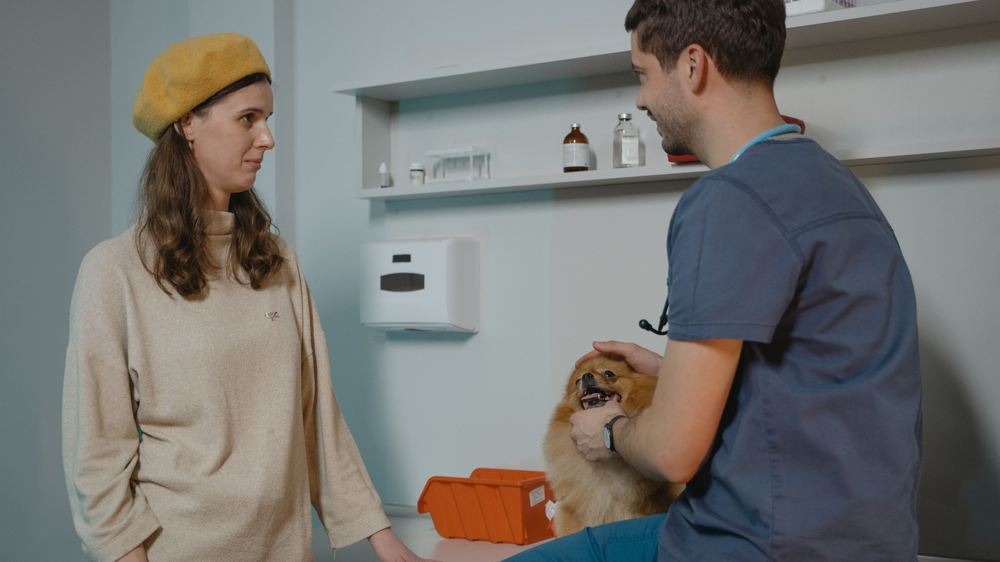
La conversación del precio se tiene una vez. La desconfianza, todas las veces que no se tuvo.
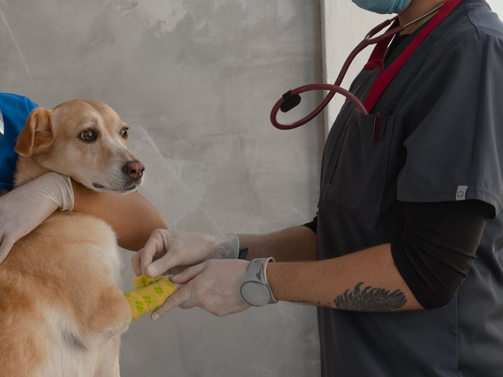
La conversación que nadie quiere tener
Preguntar el precio no es desconfiar
Mucha gente posterga la consulta por no saber cuánto va a costar, y termina llegando cuando ya es caro de verdad. Publicar el valor de lo que se repite —consulta, vacuna, control— no compromete nada: los tratamientos siguen dependiendo de cada caso. Pero permite que alguien decida venir un martes en vez de esperar al viernes.
Lo que pasa en veinte minutos
Qué incluye
la consulta
Mucha gente cree que pagó por «que lo miraran». Desglosado, se entiende que una consulta general es un examen completo — y de paso queda claro qué está incluido y qué se cotiza aparte.
- Peso y temperatura
- Incluido
- Todo lo demás se calcula sobre el peso. Es el primer dato y el que ordena la consulta entera.
- Mucosas, hidratación y linfonodos
- Incluido
- Lo que se mira en los primeros treinta segundos y lo que más información entrega de una.
- Corazón y pulmones con estetoscopio
- Incluido
- Se escucha aunque la consulta sea por otra cosa: es donde aparecen los hallazgos que el dueño no venía a buscar.
- Palpación de abdomen
- Incluido
- Con las manos, sin aparatos. Sigue siendo de lo más útil que existe.
- Boca, dientes y encías
- Incluido
- De lo que más se posterga en casa y más problemas trae a los años.
- Oídos, ojos y piel
- Incluido
- Las tres consultas más frecuentes del rubro empiezan acá.
- Exámenes de sangre
- Se cotiza aparte
- Se indican cuando el examen físico lo justifica, no de rutina. falta: precio
- Radiografía o ecografía
- Se cotiza aparte
- Y no siempre hacen falta: eso también se dice. falta: confirmar si los hacen acá
- Medicamentos que se apliquen
- Se cotiza aparte
- Lo que se aplique en la consulta se cobra aparte de la consulta misma. Decirlo antes evita la sorpresa en el mesón.
Nueve líneas. Con eso, el que paga entiende qué compró — y el que dudaba en venir deja de pensar que la consulta es «que lo miren un rato».
«¿Cuánto me va a salir?»
La pregunta que más aleja a la gente de una veterinaria
Para que la consulta rinda
Qué conviene traer
y qué anotar antes
Nada de esto es obligatorio y ninguna consulta se rechaza por no traerlo. Pero cada dato que llega escrito es tiempo que no se gasta reconstruyéndolo — y el tiempo de consulta es, literalmente, parte de lo que se paga.
-
01
El carnet de vacunas, o una foto de él
Si no aparece, sirve cualquier papel de la última atención. Sin nada escrito, un refuerzo se decide a ciegas o se repite uno que ya estaba puesto — y eso se paga dos veces.
-
02
Lo que le está dando hoy
Nombre y cada cuánto. Vale la caja, una foto de la caja o el nombre anotado en el teléfono. El antipulgas y los suplementos también cuentan: son la mitad de las sorpresas de una consulta.
-
03
Desde cuándo pasa lo que pasa
Una fecha aproximada vale más que «hace tiempo». Si come menos, cuánto menos; si cojea, de qué pata y desde qué día. Es el dato que más acorta el camino hasta saber qué mirar.
-
04
Cómo va a viajar hasta acá
Transportín para gatos y animales chicos, correa corta para los perros. Una sala de espera con un gato suelto es un problema para todos, y el susto del animal empieza antes de entrar por la puerta.
Cuatro cosas, ninguna cuesta plata. Juntas son la diferencia entre una consulta que alcanza para todo y una que se va en reconstruir lo que ya se sabía en la casa.
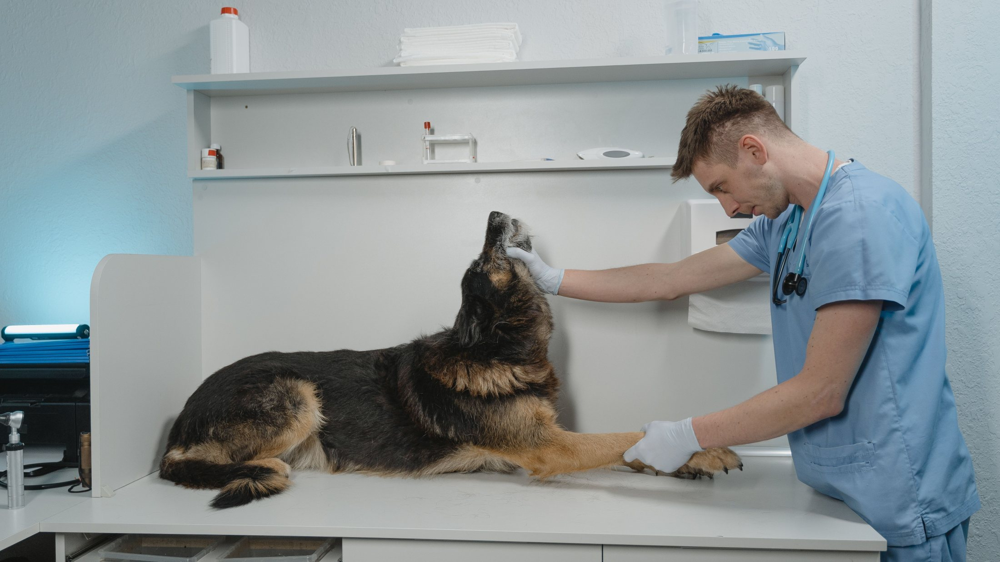
Lo que se explica antes no se discute después.
Preguntar el precio no cuesta nada
(63) 222 6700
Es el número publicado en su ficha de Google. La mitad de las llamadas a una veterinaria son por precio, y contestarlas bien es la mitad del trabajo comercial.
- Teléfono
- (63) 222 6700verificado en su ficha de Google
- Dirección
- Av. Pedro Aguirre Cerda 1102, Valdiviade su ficha de Google, igual que el teléfono — el número exacto lo confirma la clínica
- Horario
- Falta: qué días y hasta qué hora
- Urgencias
- Falta: si atienden fuera de horario y cómo se avisa
- Falta: confirmar el número — el botón verde de esta demo apunta al teléfono publicado
Cómo llegar
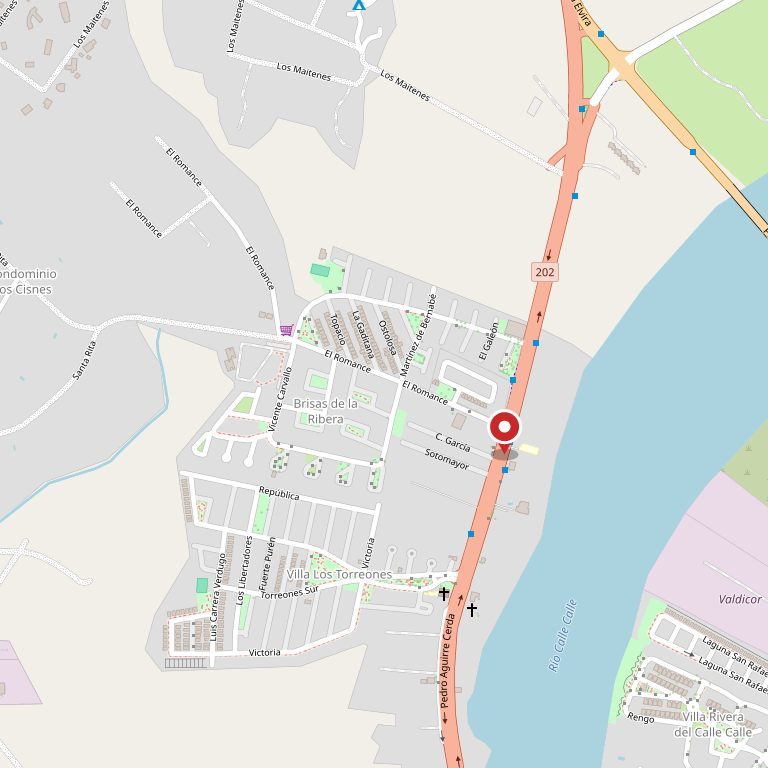
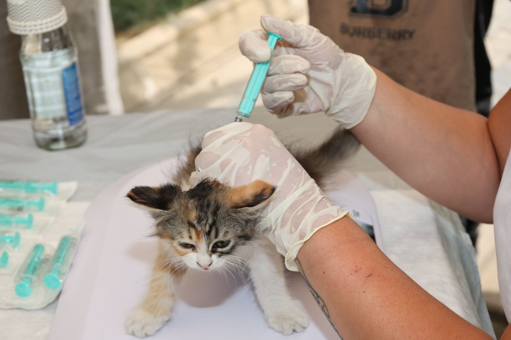

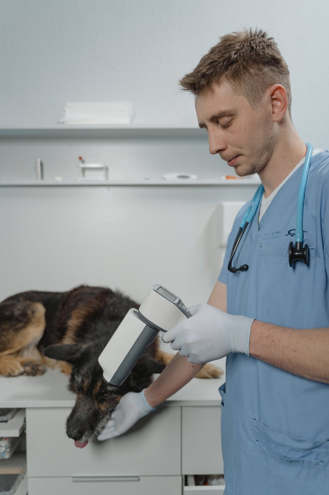
Los que entran por esa puerta
Diez imágenes de rubro, ninguna de esta clínica: hoy no hay fotos propias verificables. Cuando lleguen las suyas —el mesón, el box, la fachada— entran acá sin tocar una línea de código. La procedencia de cada una está en imagenes/FUENTES.txt.
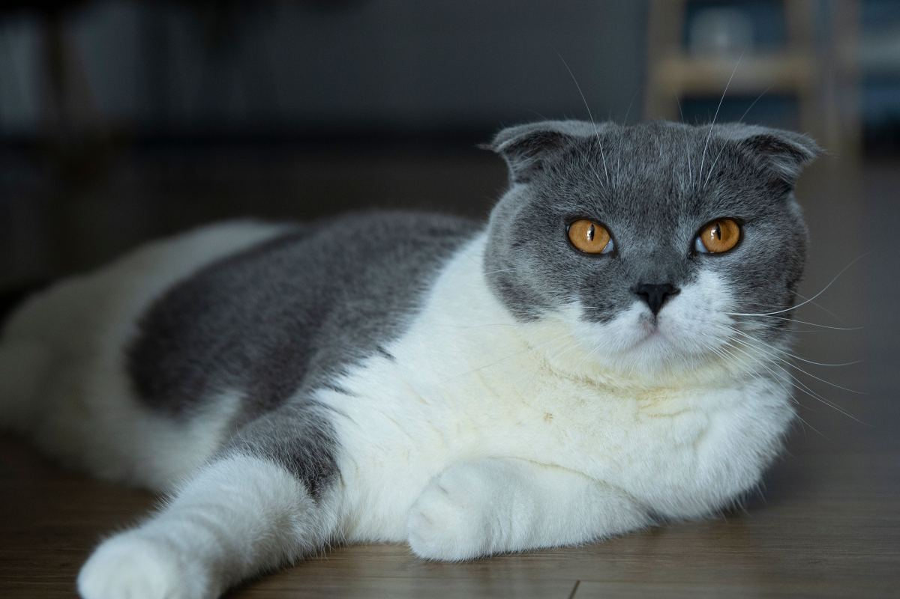
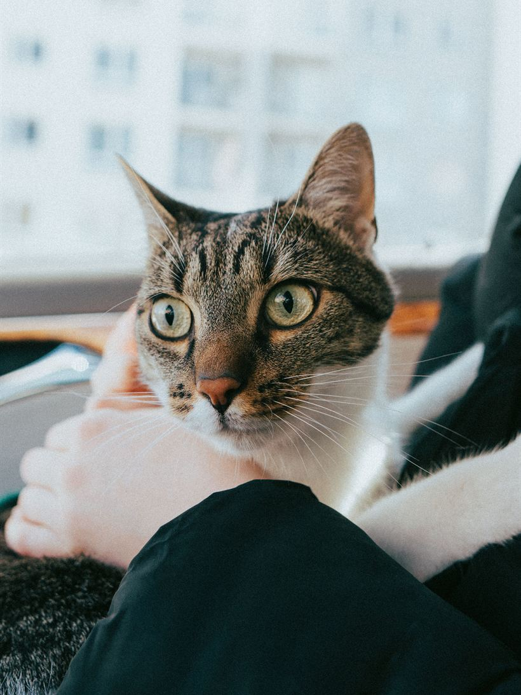
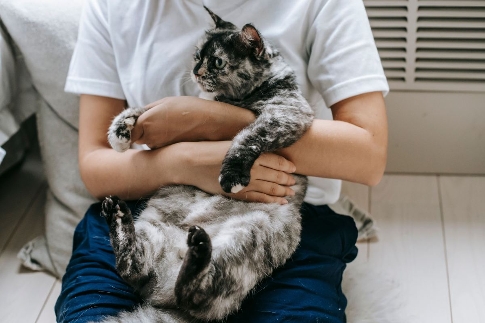
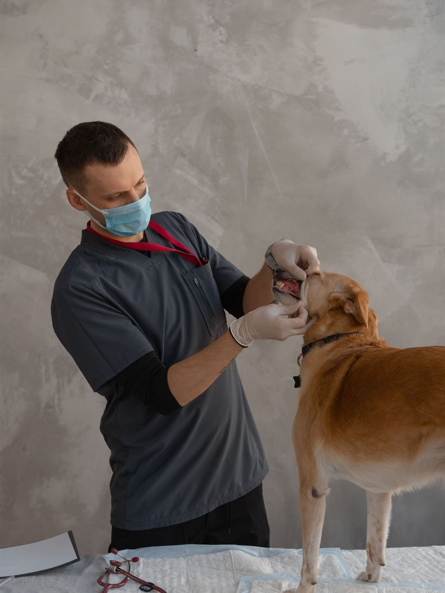
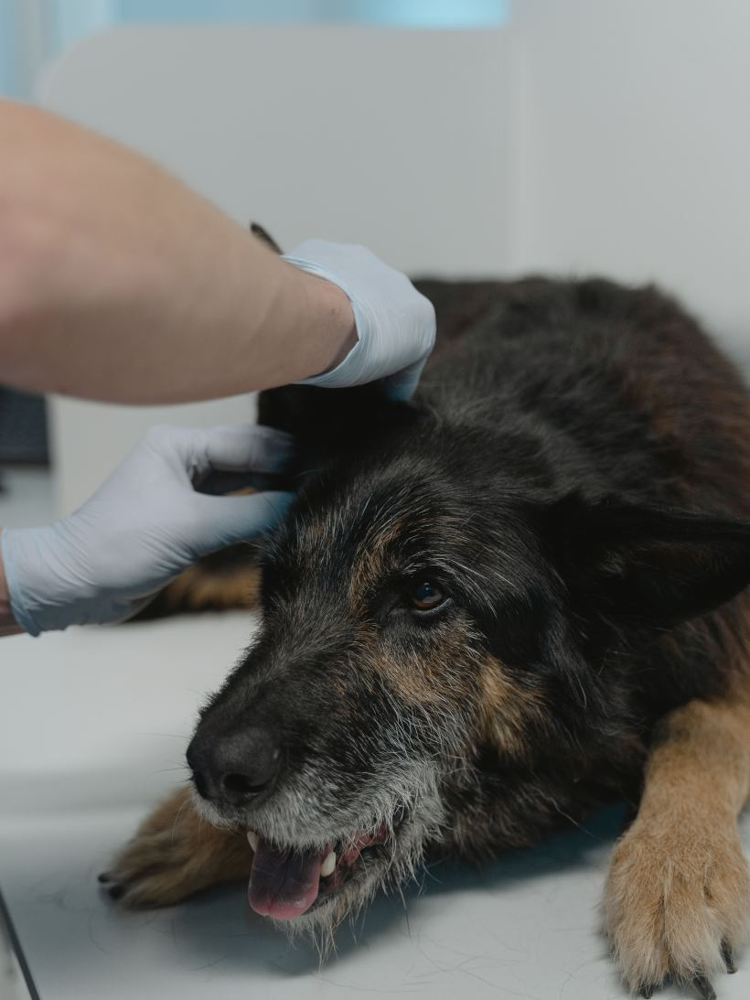
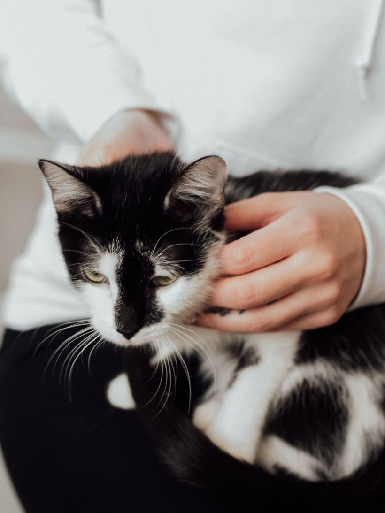
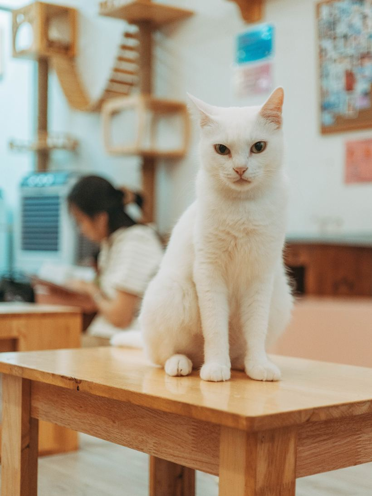